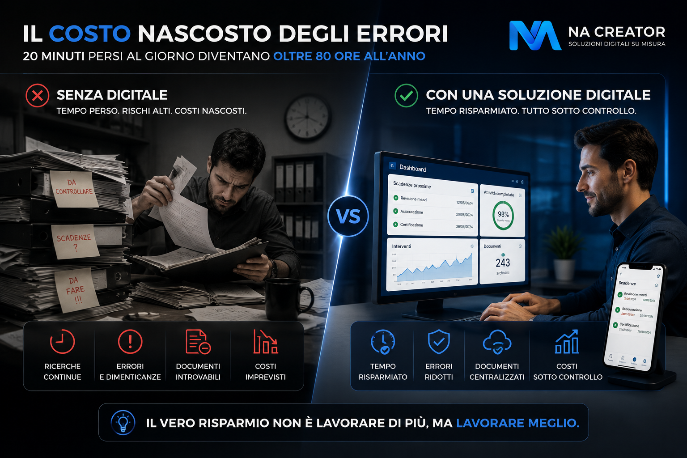

Ogni giorno nelle aziende vengono commessi decine di piccoli errori: una scadenza dimenticata, un documento perso, un dato inserito in modo errato, una comunicazione che non arriva alla persona giusta.
Presi singolarmente sembrano problemi trascurabili. Sommando questi episodi nel corso di mesi e anni, però, possono trasformarsi in migliaia di euro di costi nascosti.
Il problema non sono le persone
Quando qualcosa va storto spesso si tende a dare la colpa alle persone. In realtà la maggior parte degli errori nasce da processi disorganizzati.
File Excel salvati in cartelle diverse, documenti cartacei, WhatsApp utilizzato come gestionale e informazioni passate verbalmente aumentano ogni giorno la probabilità di errore.
Anche il miglior collaboratore può dimenticare una scadenza se il sistema non lo aiuta.
Gli errori più comuni nelle aziende
Revisioni, assicurazioni, bolli, certificazioni e tagliandi possono causare multe, fermi operativi e costi imprevisti quando non vengono controllati in tempo.
Un codice articolo errato, una quantità sbagliata o un numero scritto male possono generare problemi di magazzino, consegne e fatturazione.
Ogni minuto passato a cercare informazioni è un costo reale per l'azienda. Quando i documenti sono sparsi, il lavoro rallenta e il controllo diminuisce.
Messaggi persi, telefonate dimenticate e appunti scritti su fogli volanti rendono fragile l'organizzazione. Se le informazioni non sono centralizzate, il rischio aumenta rapidamente.

Quanto costano davvero gli errori umani?
Immaginiamo un dipendente che perda soltanto 20 minuti al giorno per cercare documenti, correggere errori o recuperare informazioni mancanti.
In un anno lavorativo si superano facilmente le 80 ore perse. Moltiplicando questo numero per tutti i collaboratori, il risultato diventa sorprendente.
Molti imprenditori scoprono di perdere migliaia di euro ogni anno senza accorgersene.
La soluzione non è lavorare di più
Molte aziende reagiscono agli errori aggiungendo nuovi controlli: più fogli, più verifiche, più procedure. Spesso però questo aumenta soltanto la complessità.
La vera soluzione consiste nel ridurre la possibilità stessa di commettere errori.
Come ridurre drasticamente gli errori
Attraverso applicazioni gestionali personalizzate è possibile guidare il lavoro quotidiano, rendere visibili le priorità e automatizzare i passaggi più ripetitivi.
- Automatizzare le scadenze
- Centralizzare i documenti
- Digitalizzare i moduli cartacei
- Gestire attività e interventi da smartphone
- Ricevere notifiche automatiche
- Consultare dashboard aggiornate in tempo reale
Quando il sistema guida le persone, gli errori diminuiscono drasticamente.
Un'azienda organizzata lavora meglio
Le aziende più efficienti non sono quelle che lavorano di più. Sono quelle che hanno processi più semplici.
Meno errori, meno tempo perso, più controllo, più produttività e più tempo da dedicare alla crescita del business.
Conclusione
Gli errori umani esisteranno sempre. La differenza è che oggi esistono strumenti in grado di ridurli drasticamente.
La domanda non è: "Le persone sbagliano?". La domanda è: "Il tuo sistema di lavoro è progettato per evitare gli errori?".
Se la risposta è no, probabilmente la tua azienda sta perdendo tempo e denaro ogni giorno.